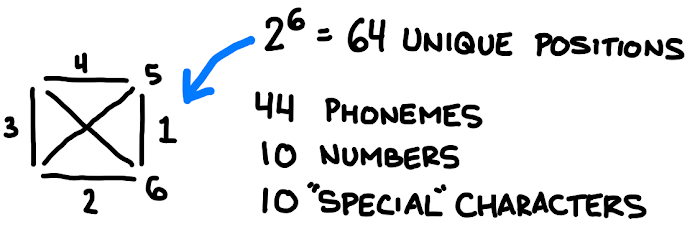

Random Little Things I’ve Wanted to Write About for a While
Pronunciation & Parts-of-Speech
The word “niche” is pronounced differently depending on which part of speech it being used as. I don’t know if this is a local phenomenon or not, but “niche” sometimes rhymes with “itch” and sometimes rhymes with “leash”.
A product that serves a very specific need is a niche (rhymes with “leash”) product.
If you like that product, it’s your niche (rhymes with “itch”).
For a few weeks this was the only example of part-of-speech-dependent-pronunciations I could think of… until last night.
It’s a good practice to use citations, you should always attribute (at-TRIB-ute) your source. conscientious people like to give credit where credit’s due - and conscientiousness is a good attribute (ATT-rib-ute).
English is Dumb
The above example is just one of a million little dumb things that “you just have to know” about English. It’s truly a nonsensical language. A famous example: “Fish” is spelled “Ghoti”.
If I were to construct a language (which is a fool’s errand, it would be an atonal language with unique symbols for each phoneme. Google tells me there’s somewhere between 40 and 45 phonemes in English. Memorizing 45 letters would be easier than memorizing 26 different letters, most of which have multiple different forms/pronunciations. Moreover, my “letters” would all fit in the same basic shape, a square. It would be something like this:

Then you could fit letters inside of neat rows and columns, you would always know exactly how to pronounce every word, even if you didn’t know what it meant. Sounding it out.
Salary Milestones
I made this thing. Wanted to share it here.
- $12,400 - you enter into the 10% tax bracket
- $12,760 - the poverty line for an individual
- 7.25
- 10/hour
- $21,900 - you enter into the 12% tax bracket
- $26,200 - the poverty line for a family of 4
- 20/hour
- $51,675 - you enter into the 22% tax bracket
- 30/hour
- 40/hour
- $96,400 - you enter into the 24% tax bracket
- 50/hour
- 1/minute (or $60/hour, if you prefer)
- 70/hour
- 80/hour
- $172,925 - you enter into the 32% tax bracket
- 90/hour
- 100/hour
- $219,750 - you enter into the 35% tax bracket
- …many more $10/hour incremental jumps…
- 1 every minute, working or not, awake or not
- 255/hour)
Basically, if you’re not making $450 every night in your sleep, you don’t have to worry about the highest tax bracket.
Note: the salary associated with each hourly pay rate is for 52 forty hour weeks. Note 2: the tax brackets here are for 2020 and assume no deductions, which is a bad way to do this, but it’s a bit cleaner than the alternatives.
Not in that List
Not shown in that list, because it’s personal to each of us, are the following two salary milestones:
- “enough” - the point at which your salary affords you the lifestyle you want. This is an important point. Once you hit this, any work you do beyond this you’d better be doing for fun.
- “rich” - basically, whatever you’re making plus just a little bit more. Nobody ever thinks they are rich.
Note: see also my Income Tax Overview Gillespedia article for more on taxes.
How much is an hour of my time worth?
I got this technique from Daniel Levitin’s “The Organized Mind”.
Pro Tip: in order to make some decisions easier, calculate the value of your time. Ask yourself, how much if an hour of my time worth? If someone asked me to do a menial (note: not particularly terrible, nor particularly fun) task for an hour… how much would they have to give you to make it “worth your time”?
Figure that out. Once you know how much money you’d be willing to lose to gain an hour, you can apply that knowledge in a few different decision-making scenarios:
Should I do this myself or pay someone to do it?
Simple formula:
A - Best guess, how many hours will it take you? B - Best guess, how much will someone charge you to do it for you? C - How much an hour of your time is worth.
A x B > C → hire someone
A x B < C → do it yourself
This is all affected by the fudge factor of how unpleasant you find the task. If I valued my time at 100 to be tortured for 2 hours. Nor would I pay someone $2 to hang out with my friends and drink beer. I can handle that task. Use this technique when you’re truly on the fence.
Should I Buy the Thing?
Simple formula:
A - Cost of the thing B - How much an hour of your time is worth.
Calculate how many hours of your life that thing costs (we’ll call this “X”). If you wouldn’t be willing to stand in a line for X hours to get the thing for free, don’t buy it. I haven’t read Henry David Thoreau’s “Walden”, but supposedly he talks about this a lot in there.
Another fudge factor: the costs of ownership and maintenance. Add those costs (in terms of dollars and hours) to the price of the thing. You’d be surprised after doing this little exercise how much of the crap you buy is actually “worth it”.
Five Minutes: Expectations vs Reality
There’s a huge chasm between what “feels like” it takes 5 minutes to do vs what actually takes 5 minutes to do.
What “Feels Like” 5 Minutes
Because of some personal flaw, I will never learn that each of these things takes longer than 5 minutes.
- Taking a shower
- Getting dressed and getting your shoes on
- Making breakfast
- Eating, in general
All of those may seem like “morning routine” things, and that’s true because I thought of this after I realized it takes me a full 30 minutes to do a lot of individual things in my morning routine. I suck at getting through a productive morning with any amount of expediency.
What Actually Takes 5 Minutes
Each of these things feels like it takes a lot longer than 5 minutes… but I’ve timed each of them. Each took fewer than 5 minutes and 1 second to accomplish.
- Decluttering an average room
- Wiping down counters & the sink
- Doing the dishes (notice a theme here?)
Top 5: COVID-19 Winners
- Amazon. They always win, though.
- Exercise equipment retailers and manufacturers, especially those with a strong online presence
- Nintendo & other videogames companies
- Zoom video chat (and others, but mostly Zoom)
- Healthy introverts with a job that lets them work from home and no kids.
Top 5: COVID-19 Losers
- Airlines, hotels, dine-in-only restaurants
- Gas Stations
- Movie theaters, clubs, other “social outing” businesses
- Students, teachers, parents.
- Anyone who got sick, or with a loved one who got sick.
Quotes
English is difficult because of the inconsistent, unintuitive, atypical, and nonobvious prefixes that mean ‘not’.
DadJokes09